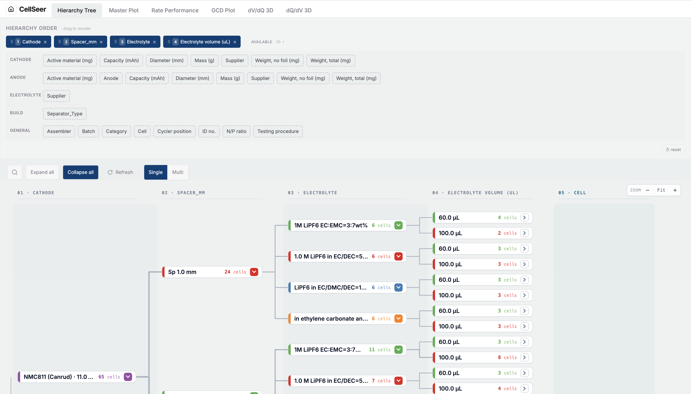
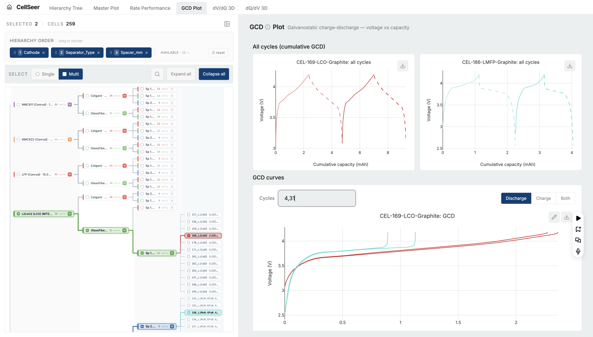
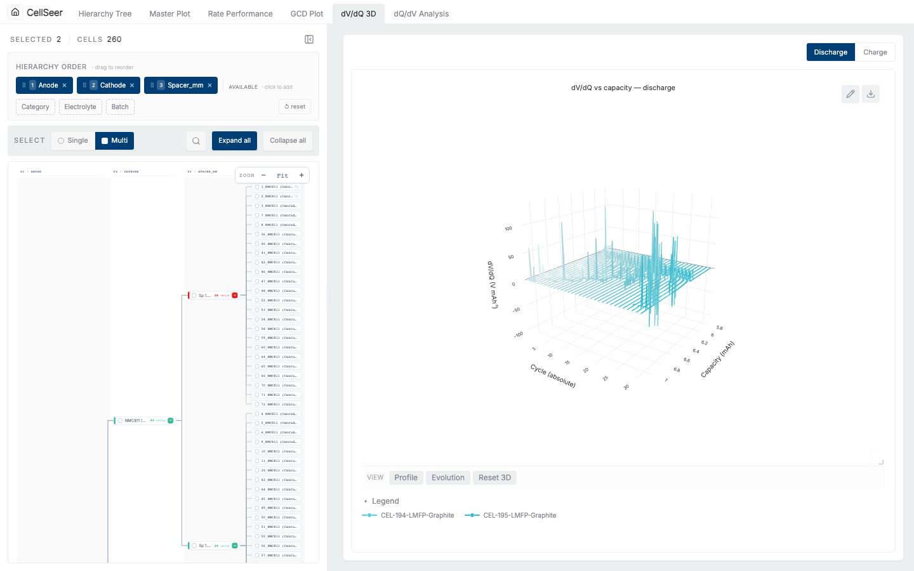

User guide
Everything the CellSeer web app does, screen by screen — from creating a project and loading cycler files to every dashboard tab, protocols, annotations and reproducible export.
Projects & the home screen

A project is one cycling campaign — a set of cells with shared metadata. The home screen lists every project with live counts across the top (projects, cells, datasets, chemistries). Search by name or chemistry, sort by recency, or hit + New project. Click a card's title to open its detail/upload page, or Dashboard to jump straight into analysis.
Loading data
Each project's detail page has two upload tiles. CellSeer separates the two kinds of input a campaign needs:
| Tile | Accepts | What it carries |
|---|---|---|
| Metadata | spreadsheet (.xlsx / .csv) | One row per cell: chemistry, separator, spacer, masses, batch, electrolyte — the experimental conditions |
| Cycling data | cycler exports (Neware .xlsx, …) · multi-file | The time-series voltage / current / capacity traces, one file per cell |
Drag files onto a tile or click to browse. For metadata, CellSeer detects the key columns and may
ask you to confirm which column is the primary key and which is the cell ID — this is how
cycling files get matched to metadata rows. A readiness indicator shows when a
project has enough (metadata + at least one cycling file) to enter the dashboard. Supported cycler
formats are advertised by the backend at GET /api/upload/loaders; add new ones in
backend/loaders/ (see the Developer guide).
Supported cycler file formats include Neware (.xlsx), BioLogic (.mpt, .mpr), Arbin, and CSV exports. Files up to 512 MB are accepted per upload.
DIGIBAT integration

If your cells come from a DIGIBAT robotic lab, CellSeer can pull them directly instead of manual upload. Connect once, browse the lab's collections, and map a collection into a CellSeer project. Sync is incremental at the file level — re-syncing only fetches cells and datasets that changed, so a large evolving campaign stays cheap to keep current. Sync status and run history are shown per project.
Each project has its own DIGIBAT connection and sync history. Cell counts shown on the home screen reflect only active cells — cells removed from a DIGIBAT collection are hidden automatically after the next sync.
Dashboard layout
The dashboard is a single screen with a tab strip across the top. Tabs progress from broad to narrow:
| Tab | Scope | Answers |
|---|---|---|
| Hierarchy Tree | whole library, structural | How is my library organised? What conditions exist? |
| Master Plot | whole campaign, at a glance | Which condition wins? Which cells failed? |
| Rate Performance | cells, capacity vs cycle | How does capacity fade across C-rates? |
| GCD Plot | cell(s), voltage vs capacity | What's the curve shape and polarisation? |
| dV/dQ 3D | cell(s), differential | How is the electrode balance changing? |
| dQ/dV 3D | cell(s), differential | Where are the phase transitions, and are they drifting? |
A cell you select in any tab stays selected as you move between tabs, so a typical workflow is:
spot an outlier in the Master Plot → open it in GCD to see the curve → check dQ/dV for the
mechanism. The active tab lives in the URL (?tab=), so any view is shareable and
survives a reload.
Hierarchy Tree

The tree is CellSeer's first-class navigational object. The hierarchy order bar at the top lets you drag metadata fields (Cathode, Anode, Separator, Electrolyte, Spacer, Batch…) to define how cells nest — the tree rebuilds live. Search to jump to a node or serial, expand / collapse levels, and click a leaf to select that cell across the app. This is how you carve a 5,000-cell library into the structure that matches your experiment.
Master Plot

The bird's-eye view: every experimental condition and its replicates on one screen, coloured by a metric you choose (peak capacity, coulombic efficiency, cycles, retention). Switch between the four views with the buttons top-right; the KPI strip summarises the filtered set; click any cell to open an Inspector with its sparkline, quality flags, and buttons to drill into the detail tabs.
Because it's the analytical heart of CellSeer, the Master Plot has its own chapter:
Rate Performance

The classic capacity-retention plot: how much capacity a cell delivers each cycle, with C-rate steps shaded when a protocol is attached. Use the hierarchy sidebar to pick which cells appear; the charge/discharge toggle switches direction. This is the quickest read on whether a cell is fading, recovering after a rate test, or dead.
GCD Plot

The fundamental electrochemistry view. Each cycle is a voltage-vs-capacity trace; the colour scale
encodes cycle number so you can see the curve evolve with ageing. Below the main chart, a cumulative
all-cycles panel and a voltage-vs-time panel (for formation checks) share the same cells. A cycle
filter (e.g. 1, 5, 10-20) trims the traces; the capacity axis switches to specific
capacity (mAh g⁻¹) automatically when cathode mass is known. Edit titles, labels,
fonts and the legend via the chart's edit popover — your text always wins over the smart defaults.
dV/dQ 3D

Differential voltage analysis surfaces electrode-balance features that raw GCD curves hide. The 3D view stacks every cycle so drift is visible as a moving ridge; the 2D peak panel overlays cycles for precise peak tracking. Axes are in publication units (Capacity in mAh, dV/dQ in V mAh⁻¹). Pick cells from the hierarchy sidebar; toggle charge/discharge.
dQ/dV 3D

Incremental-capacity analysis maps phase transitions as peaks against voltage. Peak height, position and broadening track specific ageing mechanisms, so watching them drift across cycles is a standard diagnostic. Same controls as dV/dQ: 3D surface plus 2D overlay, hierarchy-driven cell selection, direction toggle, units in mAh V⁻¹.
Selecting & filtering cells
CellSeer keeps one selection across the whole app. You can drive it from anywhere:
- Hierarchy Tree — click a node or leaf.
- Master Plot — click a heatmap tile, ranking dot, or treemap cell; shift-drag to lasso in the Explorer/parcoords.
- Filters — cathode / separator / spacer selectors in the toolbar narrow every view at once; the Master Plot's ranking and heatmap labels are click-to-filter.
Multi-select mode lets you overlay several cells in the GCD and differential tabs for direct comparison. The detail side-panel (right edge) shows the selected cell's metadata and annotations.
Protocols
A protocol segments a cell's cycles into phases (formation, rate test, main cycling) with their C-rates. This matters because raw cycle indices mix those phases — without segmentation, a capacity step-down might be a rate change, not degradation. Attach protocols by editing a cycling dataset's metadata, or author and reuse protocol templates and apply them in bulk. Once attached, retention-class metrics unlock in the Master Plot and C-rate bands appear in Rate Performance. Until then, those metrics show a lock with an explanation rather than a misleading number.
Annotations & metadata
Open the detail panel for any cell to add a note and tags (preset tags include Review, Exclude, Best, Anomaly, Repeat). Tagging a cell Exclude drops it from the differential views; tags persist per cell and are visible wherever the cell appears. You can also edit cell metadata inline (an allow-listed set of fields — chemistry, masses, separator, etc.); edits immediately recompute the derived metrics that depend on them, such as specific capacity.
Exporting figures
Right-click any chart for export options. Beyond PNG / CSV / Plotly-JSON, the Export ZIP option produces a self-contained reproducible bundle:
| In the ZIP | What it's for |
|---|---|
| the PNG | the figure as you see it |
| trace data (CSV + Plotly JSON) | the exact points drawn |
manifest.json | provenance: source cells, full-resolution API endpoints, view settings, timestamp |
reproduce.py | regenerates the figure; --fetch-original re-downloads the original full-resolution data |
So a colleague (or a reviewer) can rebuild the figure from the original file, not just look at
pixels. The same plots are available outside the app entirely through the
cellviz Python library.